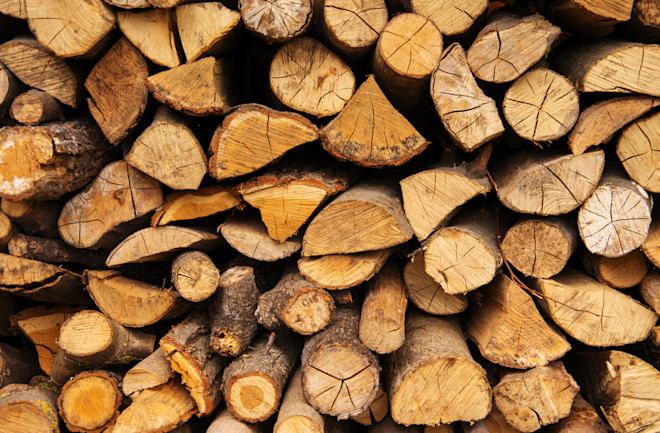

About Me
I’m a third-year Bachelor of Education (Secondary) / Bachelor of Arts (Design Innovation & Technologies) student at Australian Catholic University. My main teaching areas are Textiles, Timber, and Design & Technology, with additional experience in Metalwork, Food and Nutrition, Engineering, and Computing. My teaching practice is guided by a strong focus on sustainability, creativity, and design thinking.
I’m passionate about hands-on learning where students build skills through purposeful projects connected to real-world contexts.
My classroom practice emphasises safety, skill development, and empowering students to explore, problem-solve, and take ownership of their ideas. During my teacher training, I’ve completed placements at Marist Sisters College Woolwich, St Vincent's College Ashfield, and Casimir College Marrickville. These experiences have shaped my approach to learning by doing and reinforced my commitment to authentic, student-centred teaching.
Outside of teaching, I work as a stunt performer in the Australian film industry. This unique career keeps me active, creative, and constantly learning. It’s a big part of what inspires my teaching practice. Whether I’m in the classroom or on set, I bring energy, focus, and a passion for purposeful design to everything I do.
GET IN TOUCH MORE ABOUT MY STUNT WORLDMy Teaching Areas
SCROLL SIDEWAYS TO SEE THE AREAS AND YEAR GROUPS I CAN TEACH. TO LEARN MORE ABOUT EACH AREA, CLICK ON THEM.

Textiles Technology
Stage 4 - 6
Focus on developing students’ practical skills in textile techniques and production, while exploring design processes, innovation, sustainability, and the impact of the textiles industry. Across the stages, students move from foundational making and design skills to more complex, independent projects that integrate creativity, critical thinking, and real-world application.
Industrial Technology
Stage 4 - 6 Timber | Stage 4 - 5 Metal
Focus on building students’ knowledge and skills in tools, materials, and production processes across areas such as timber, metals, engineering, and multimedia. Students progress from basic workshop skills to advanced project development, incorporating design, safety, sustainability, and industry practices.

Design & Technology
Stage 4 - 6
Centres on developing students’ ability to apply the design process to solve real-world problems through innovation and creativity. Across the stages, the focus shifts from exploring design fundamentals to producing independent, research-based projects that demonstrate critical thinking, sustainability, user-centred design, and emerging technologies.

Food Technology
Stage 4 - 5
Revolves around developing students’ understanding of nutrition, food preparation, and safe handling practices, while exploring the role of food in everyday life and society. Students build practical cooking skills alongside knowledge of health, sustainability, and the Australian food industry, preparing them to make informed food choices and design creative food solutions.

Computing & Digital Technologies
Stage 4 - 5
Focus on developing students’ computational thinking, problem-solving, and digital literacy through practical experiences with coding, data, and information systems. Students learn to design, produce, and evaluate digital solutions while exploring the ethical, social, and creative impacts of technology in everyday life and future careers.

Engeneering Technologies
Stage 4
Is guided by an introduction to engineering principles, problem-solving, and design processes through hands-on projects. Students explore how materials, tools, and systems can be applied to solve real-world problems, building foundational skills in innovation, critical thinking, and safe workshop practices.